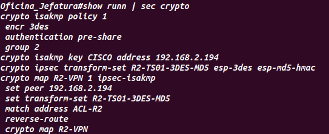
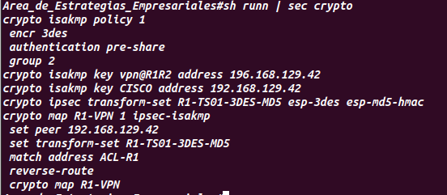
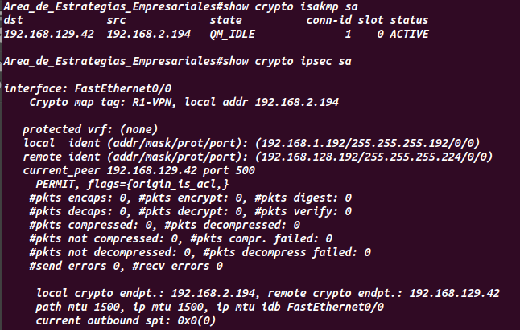
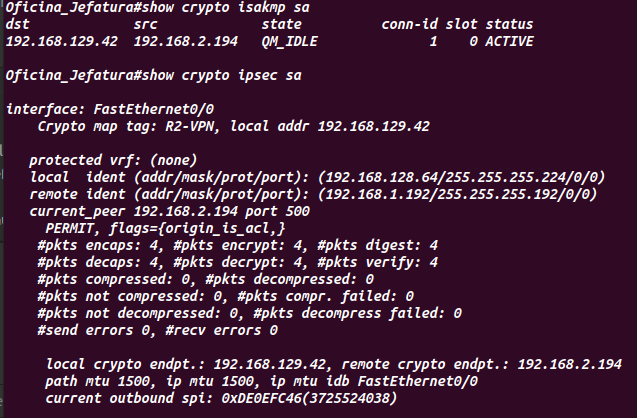

Universidad Nacional de Ingeniería
Facultad de Ciencias
Escuela Profesional de Ciencias de la Computación
Administración de Redes
Proyecto Capstone: Internetworking
Estrategias Empresiales con las Areas de la Sede Trujillo.
Entonces se decidió usar las VPN site to site (IPsec), ya que nos permitela creación de un enlace cifrado entre las puertas de enlace VPN ubicadas en cada uno de estos sitios.
Las siguientes imagenes son las configuraciones que se realizó en el Dpto. de Marketing del Area de Estrategias Empresariales con el Dpto. de Marketing de la Oficina de Jefatura de la sede Trujillo.
En esta imagen se muestra que la configuracion que se realizó en el Switch de capa 3 de la Oficina de Jefatura -Sede Trujillo
En esta imagen se muestra que la configuracion que se realizó en el Switch de capa 3 del Area de Estrategias Empresariales - Sede Central
En esta imagen se muestra que la autencación se realizó correctamente en el Area de Estrategias Empresariales
En esta imagen se muestra que la autencación se realizó correctamente en la Oficina de Jefatura
